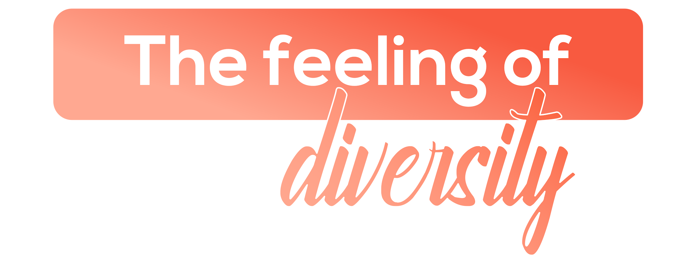

The Feeling of Diversity
A university town where students from 100+ nations and every Indian state coexist — Manipal is India's most genuinely diverse campus experience.
MAHE (Manipal Academy of Higher Education) is India's most internationally diverse university campus — a purpose-built educational city on the Karnataka coast that welcomes students from over 100 countries and every Indian state. In Manipal, diversity is not a policy; it is the everyday reality of campus life.
AIESEC at MAHE operates in one of the world's most naturally cosmopolitan environments. Exchange participants here don't need to seek out diversity — it finds them in every classroom, cafeteria, and corridor. The coastal beauty of Udupi, the cultural richness of Karnataka, and Manipal's extraordinary international community together create the feeling of diversity made tangible.

What makes MAHE — Manipal unforgettable.

Manipal Academy hosts over 30,000 students from more than 100 countries simultaneously — creating a campus culture that is genuinely international in the middle of coastal Karnataka. The medical college, engineering school, and media and communication faculty give it a breadth unusual for any single institution. Exchange participants find a peer community here that is already globally oriented.

Malpe Beach, ten kilometres from campus, is a working fishing beach before it is anything else — the early morning arrival of the fleet and the fish auction make it more vivid than any resort beach. The beach itself is wide, clean, and largely uncrowded outside weekends. St. Mary's Islands, accessible by boat from Malpe, has unique hexagonal basalt formations worth the 20-minute crossing.

The Sri Krishna Temple at Udupi was founded by the philosopher-saint Madhvacharya in the 13th century and has been a site of unbroken ritual and scholarship ever since. The surrounding town — with its eight mathas, its pilgrims, and daily life organised around the temple — is entirely different in atmosphere from the campus ten kilometres away. The evening puja is particularly memorable.

Udupi cuisine is pure vegetarian South Indian cooking evolved in temple kitchens — masala dosa, sambar, coconut-based curries, and specific vegetable preparations that define South Karnataka cooking at its most refined. The meals served in Udupi's original restaurants are not the North Indian franchise but the actual food from which that tradition derives. The difference is significant.

The Tulu Nadu culture of coastal Karnataka has maintained traditions — the Yakshagana theatrical form, the Bhuta Kola spirit-propitiation rituals, the Tulu language itself — entirely distinct from mainstream Kannada culture. Exchange participants at Manipal encounter a regional identity that is culturally rich, politically assertive, and almost entirely unknown to the outside world. This is one of the most genuine cultural immersions available on any Indian exchange.

Manipal's Kasturba Medical College, established in 1953, was India's first private medical college and remains one of the finest. The university's research infrastructure across medicine, engineering, and media supports a culture of inquiry that permeates the campus. Exchange participants who use this environment actively — attending seminars, joining research groups, accessing the library — gain disproportionate value.
End Point sits at the edge of the Manipal plateau where the land drops steeply toward the coastal plain, giving a view across the Western Ghats foothills and, on clear evenings, toward the Arabian Sea. It is ten minutes from the centre of campus by foot. The evening light here — particularly in the weeks after the monsoon clears — is worth making a regular habit.

Mangalorean seafood cuisine — neer dosa with clam curry, kane fish rava fry, prawn ghee roast — is one of the most distinctive coastal food traditions in India, using the same fresh catch that supplies the Malpe fishing fleet. The restaurants in Udupi, Manipal, and Mangalore serve this food at prices that make it genuinely everyday. It is the primary food reason to be here.
Everything you need to know before arriving in Manipal.
MAHE campus makes living manageable. On-campus accommodation and dining options are affordable and high quality — your local committee will assist with all arrangements.
Budget ₹10,000–12,000 per month including transport, meals, and daily needs. On-campus accommodation and dining options are affordable and high quality.
Within campus, walking and cycling are common. Auto-rickshaws and taxis connect to Udupi and Mangalore. Regular bus services link Manipal to coastal Karnataka's main towns.
You'll need a valid Indian visa for your exchange. Your local committee will provide a detailed visa guide and assist with the application process.
MAHE has its own world-class Kasturba Medical College Hospital on campus — arguably the most well-resourced healthcare setting of any AIESEC LC in India. Your local committee provides full support.
Kannada and Tulu are local languages; English is the lingua franca on Manipal's international campus. Hindi is widely spoken among students. The campus is one of India's most English-friendly environments.
Jio and Airtel cover the campus and surrounding area well. SIM cards are available at Mangalore Airport or any store with your passport — essential for campus WiFi backup and local travel.
Dress modestly at Udupi's Sri Krishna Temple and remove shoes before entering. MAHE's campus is respectful of all religions and cultures — the international environment makes cultural sensitivity natural and easy.
Two ways to experience MAHE — Manipal through AIESEC.

A 6–8 week volunteering exchange program for ages 18–30, focused on sustainable development goals. Make a tangible impact on local communities while immersing yourself in Karnataka's coastal culture.

A professional internship experience designed to accelerate your career development in a global setting. Work alongside MAHE's world-class academic and research institutions.
Your dedicated team at MAHE, ready to make your exchange exceptional.
Reach out to our national team for any questions about exchanges at MAHE.
